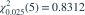
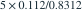

果冻净重独立服从正态分布，样本量 6、无偏样本方差 0.112。每盒装 4 枚独立果冻；空盒重量与果冻独立，方差已知为 0.06。取

，由果冻方差的双侧 95% 区间换算，整盒重量方差区间的上限约为？- A2.7549
- B2.0143
- C2.5074
- D3.0220
我已思考，展开答案与解析
正确答案：A
- 果冻方差上限为

。整盒方差为 ，故上限约为 2.7549。
易错提醒先明确分布参数、独立性和统计量的定义，再进行计算。
资料校订：补充独立正态假设；以题干给定分位数计算，上限保留四位小数为 2.7549。
用户提供练手卷 · 原第 6 题；题目 PDF 第 2 页
单选改编；题干与选项已重新编排